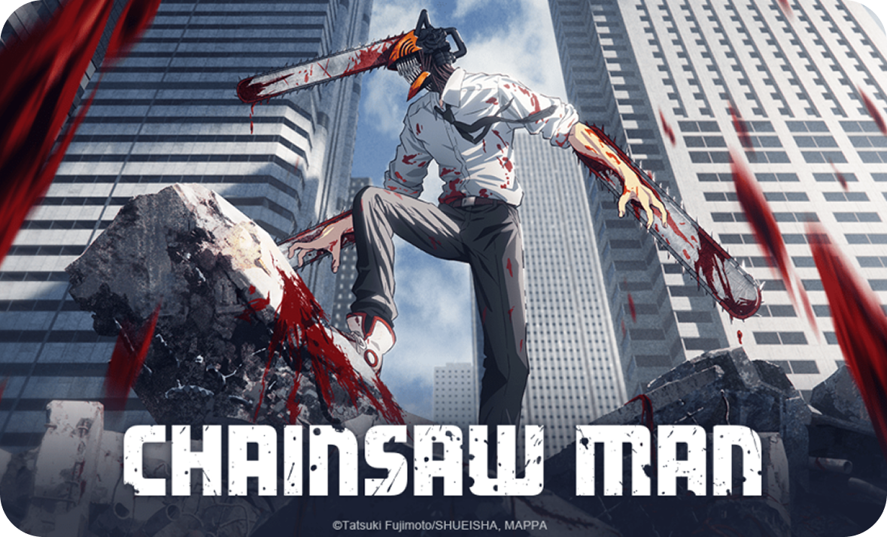
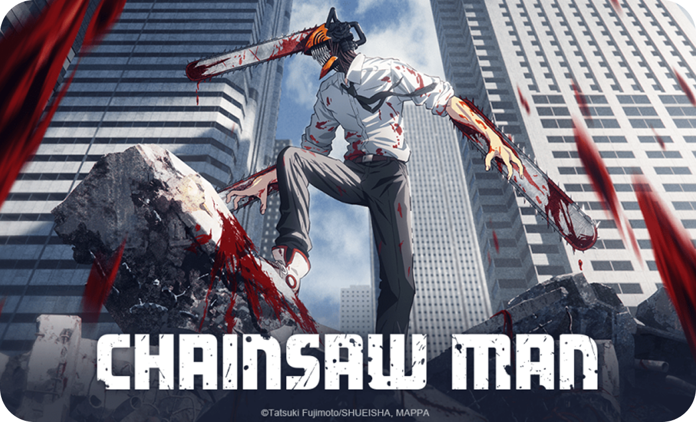
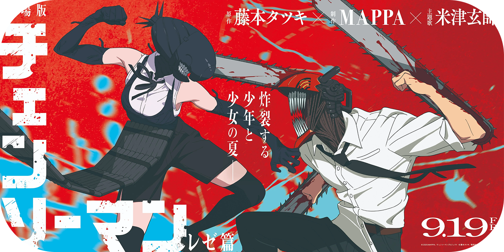

O que é Chainsaw man?
“ O segredo para levar uma vida feliz neste mundo é que a ignorância é uma bênção. ”
— Quanxi
Sobre
Chainsaw Man é um mangá/anime shounen com ação mas é uma obra que retrata o vazio existencial, a fragilidade da vida e o poder destrutivo dos medos humanos, usando os demônios como metáfora para a inevitabilidade da dor e da morte.

Sinopse
Chainsaw Man, é um dos mangás mais impactantes da última década. Misturando ação intensa, horror psicológico e crítica social, a obra cativa pela sua originalidade e personagens fora do comum. Se você busca um mangá que fuja do convencional, com momentos chocantes e desenvolvimento narrativo instigante, essa é a escolha certa.
Personagens do Elenco
Denji
Pochita
Makima
Aki
Power
Kishibe
Kobeni
Reze
Himeno
Asa
Quanxi
Anjo
Anime
 

14 de dezembro de 2020, o anime Chainsaw Man foi anunciado após a conclusão da Saga da Segurança Pública no mangá. Por volta dessa época, o anime teve uma apresentação ao vivo durante a Jump Festa 2021 em 19 de dezembro de 2020. Também foi confirmado que o estúdio MAPPA produziria a adaptação para anime de TV.
O primeiro trailer do anime foi exibido em 27 de junho de 2021 durante o evento de 10º aniversário da MAPPA, com a revelação da equipe de produção do anime e várias cenas que adaptavam os primeiros capítulos do mangá. Em 19 de dezembro de 2021, a adaptação para anime teve outra apresentação durante a Jump Festa 2022, que revelou a data de lançamento do anime através do segundo trailer: outubro de 2022.
Mangá
Chainsaw Man é um mangá japonês escrito e ilustrado por Tatsuki Fujimoto. A primeira parte foi publicada na revista Weekly Shonen Jump da editora Shueisha de dezembro de 2018 até dezembro de 2020, com seus capítulos coletados em vinte e dois volumes.
A arte de Chainsaw Man encena o caos íntimo como estética. Em vez de polimento “bonito”, privilegia energia, ritmo e montagem — uma sensação de cinema impresso em papel. A violência é linguagem emocional; a ternura, contracampo. Forma e conteúdo se encontram para fazer você sentir antes de entender.
Filme

O arco de Reze em Chainsaw Man é uma tragédia romântica que expõe a fragilidade dos desejos humanos: nele, amor e violência se entrelaçam como cinema poético, revelando que até os sentimentos mais puros podem ser detonados por forças maiores.
O arco é menos sobre explosões e mais sobre a impossibilidade de conciliar amor e sobrevivência em um mundo cruel. É cinema dentro do mangá: uma história que começa como comédia romântica, se transforma em suspense e termina como tragédia inevitável. Fujimoto nos lembra que, como no cinema, a vida é feita de cortes bruscos — e nem sempre há espaço para finais felizes.
É animado pelo Studio MAPPA e foi lançado em 19 de Setembro de 2025 no Japão, enquanto no Brasil foi lançado em 23 de Outubro de 2025.
Autor
Tatsuki Fujimoto (タツキFujimoto Tatsuki ?)藤ふじ本もと é um artista de mangá japonês conhecido por diversas obras como: Fire Punch, Sayonara Eri, Look back, e o tão famigerado Chainsaw Man, sendo a obra que mais teve um estouro nas midias sociais.
Atualmente, algumas de suas obras receberam animação, tais como: Look Back, e um seriado de varios One-shots, chamado de 17-26, onde apresentam oito historias escritas por ele aos seus 17 à 26 anos.
E, ainda esse ano (2026), teve o filme Arco De Reze adaptado, de sua Franquia de Chainsaw Man.
Porque ver
Chainsaw Man?
Você gosta quando uma história não trata seu coração como um enfeite? Chainsaw Man corta o verniz e mostra desejo, medo e amor sem maquiagem. Ele fala a linguagem do cinema e encara o vazio com honestidade — e é justamente aí que fica irresistível.
Chainsaw Man não é apenas um anime de ação, mas uma obra que mistura brutalidade, emoção e filosofia sobre o que significa ser humano em meio ao caos.
Assista porque ele não te promete sentido — ele te convida a criá‑lo. Entre o beijo e a explosão, Chainsaw Man te dá algo raro: a chance de sentir que, mesmo no caos, seus pequenos desejos são suficientes para manter você vivo e humano.